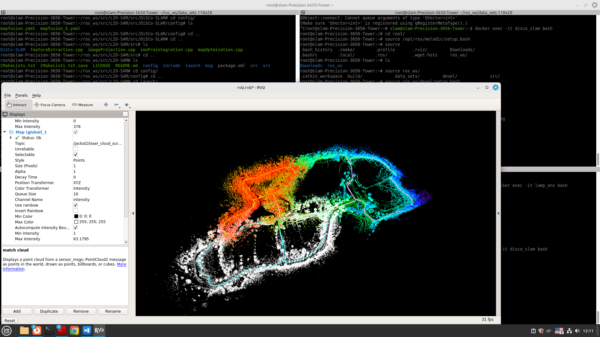
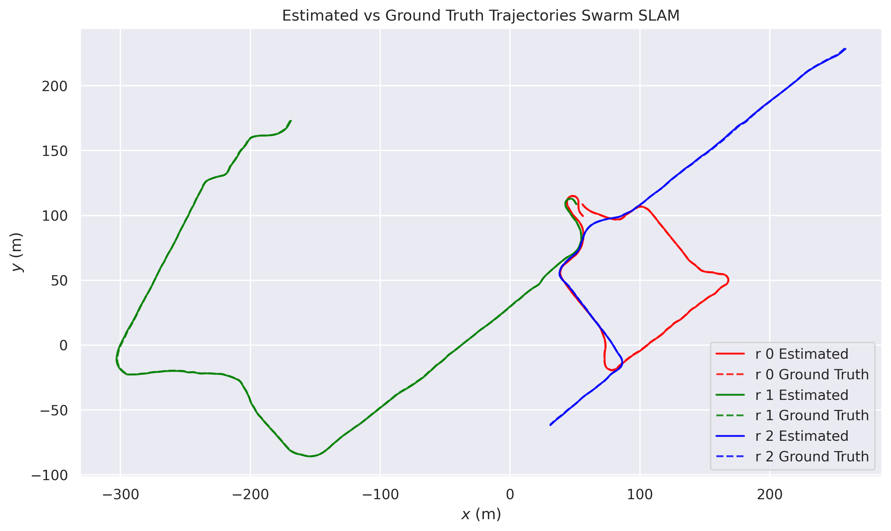

Benchmarking and improving a multi-robot collaborative SLAM framework
Built a reproducible benchmarking pipeline for LiDAR-based collaborative SLAM: run public datasets through each C-SLAM framework, evaluate the estimated trajectories against ground truth with evo (APE / RPE), and compare. On the GRACO dataset I evaluated DiSCo-SLAM, Swarm-SLAM, and LAMP 2.0. DiSCo-SLAM was the most reliable, with roughly 15 times lower trajectory error than Swarm-SLAM, while the centralized LAMP 2.0 showed a map-fusion failure. Supervised by Dr. P. Checchin and Dr. A. K. Aijazi.
ROS 1 / ROS 2
DiSCo-SLAM
Swarm-SLAM
LAMP 2.0
GRACO dataset
evo (APE / RPE)
Docker

